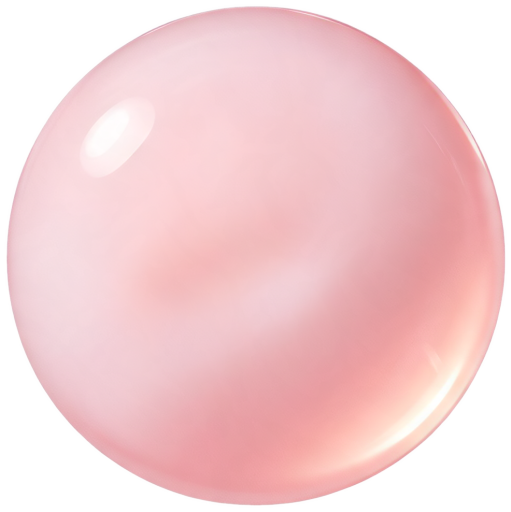

기존
지금 앱. 반투명 흰 카드가 벽과 거의 같은 색, 알약 버튼·알약 값 칸, 기준 숫자와 조작이 위아래로 떨어져 있다. 테스트 버튼 없음.
하루 기준

50g
당 · WHO 권고
300mg
카페인 · 줄이기 진행 중
당
25 g50 g100 g
카페인
줄이기 목표가 카페인 기준을 맡고 있어요
기본값은 당 50 g(WHO 권고), 카페인 400 mg(식약처 성인 권고)이에요.
조금씩 줄이기
당 조금씩 줄이기
4~12주에 걸쳐 하루 기준을 낮춰요
시간
하루가 바뀌는 시각
A 카드 정리
카드 문법은 유지. 흰 단색 카드 + 얇은 테두리로 벽과 분리, 그림자 없음. 당·카페인을 각자 묶음으로 나눠 숫자 바로 밑에 조작. 알약은 전부 둥근 사각(12). Pro는 검정 카드 하나로 눈에 띄게.
하루 기준
50g
당 · WHO 권고25 g50 g100 g
300mg
카페인 · 줄이기 중이번 주 기준은 줄이기 목표가 정해요. 바꾸려면 아래에서 줄이기를 그만두세요.
조금씩 줄이기
당
4~12주에 걸쳐 하루 기준을 낮춰요
카페인
이번 주 300 mg → 목표 200 mg · 8주 중 3주
한 주에 5일 이상 기준 안이면 다음 주 기준이 조금 내려가요.
하루가 바뀌는 시각
오늘 마감을 여는 시각
하루가 바뀌는 시각 전에 마신 음료는 전날 몫이에요.
슈가캡 Pro
로슈·카인과 친해지기, 월 추이, 조금씩 줄이기
앱 소개 다시 보기›
구매 복원
개인정보처리방침↗
테스트TestFlight에만 보여요
오늘 먹이기 바로 보기마감 없이
어제 정산 바로 보기게이트부터
Pro 켠 것처럼
로슈 호감도 1단계−+
카인 호감도 1단계−+
첫 실행으로 되돌리기기록은 남김
슈가캡 1.0 (137) · 메뉴 데이터 2026. 10. 5.
편의점 음료: 식품의약품안전처 식품영양성분 데이터베이스
편의점 음료: 식품의약품안전처 식품영양성분 데이터베이스
B 목록형
iOS 설정 앱 문법. 묶음 제목은 카드 밖, 행 오른쪽에 값. 큰 숫자 대신 행 값이라 한 화면에 다 들어온다. 하루 기준 행을 누르면 그 자리에서 조작이 펼쳐진다(당 행 펼친 상태). 캐릭터는 작아진다.
하루 기준
당50 g⌃
기본값은 당 50 g(WHO), 카페인 400 mg(식약처 성인 권고)이에요.
조금씩 줄이기
한 주에 5일 이상 기준 안이면 다음 주 기준이 조금 내려가요.
시간
하루가 바뀌는 시각오전 4시⌄
오늘 마감을 여는 시각오후 8시⌄
로슈·카인과 친해지기, 월 추이, 조금씩 줄이기›
앱 소개 다시 보기›
구매 복원
개인정보처리방침↗
테스트TestFlight에만 보여요
오늘 먹이기 바로 보기
어제 정산 바로 보기
Pro 켠 것처럼
로슈 호감도 1단계−+
카인 호감도 1단계−+
첫 실행으로 되돌리기
첫 실행으로 되돌리면 온보딩·첫 사용 안내·로슈카인 소개가 다시 나와요. 기록은 남아요.